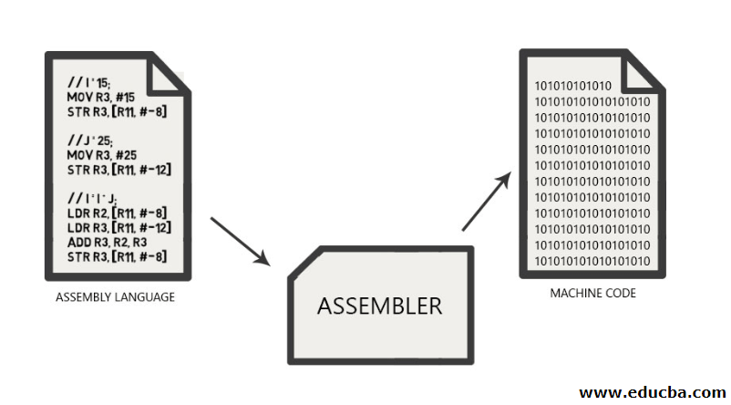

Programming Languages Info
Press tabs to read some basic information about each languages.
Languages are listed in alphabetical order.
Assembly Language
Detail page on TIOBE Index for Assembly Language
Assembly Language is the interface between higher level languages (C++, Java, etc) and machine code (binary). For a compiled language, the compiler transforms higher level code into assembly language code.
Every family of CPUs define their own Instruction Set Architecture (ISA), a set of basic instructions that the CPU can execute without needing further translation or transformation. The compiler decomposes composite higher level composite instructions into operations available in the ISA.
Some of the more common ISAS in use today include MIPS, ARM, Intel x86, RISC-V.
Assemblers decompose Assembly instructions into their respective binary representations and replace the generic addresses of assembly code with explicit register and memory addresses of your computer.
Code where execution time and control is crucial can be written directly in assembler. This, however, comes at the cost of prolonging development time, and making development harder. It should also be noted that there has been a large amount of research going into making compilers optimize the code that is generated automatically.
Assembly language is primarily used in the following situations:
- There is a need to use CPU instructions not available in higher-level languages.
- There is no high-level language to program a certain types of processors.
- Implementing a compiler for a higher level language on a new ISA.
C/C#/C++

What is C?
C programming language is the oldest and most widely used of the three. Dennis Ritchie invented it in 1972 and then published in 1978. Ritchie designed it for the development of a new version of Unix.
Up until that point, the Unix operating system used assembly language, which is the lowest level of programming readable by a computer. The invention of C revolutionized programming and operating systems forever. The rest, as they say, is history.
C is still a low-level programming language, which performs almost as efficiently as assembly code. It provides base-level access to memory, and it requires very little runtime support.
Despite being published 40 years ago, C is still the most widely used programming language of all time. Programmers still use it in operating systems, kernel-level software, hardware drivers, and applications that need to work with older code.
Most old-school programmers will suggest that C is the best programming language to start with because so many newer languages build off of it. It may also offer some security benefits because of its age. The pool of people using it is smaller, making it a less desirable target for hackers.
What is C++?
C++ was developed as an extension of the C programming language. It was created by a Ph.D. student in Denmark named Bjarne Stroustrup. His goal was to enhance C and add object-oriented programming capabilities without sacrificing speed or efficiency.
C++ is considered an intermediate-level programming language, as it builds upon the low-level C language but has more advanced capabilities.
Since the initial publication of C++ in 1985, it has become another extremely prolific programming language. It’s used alongside C in the development of operating systems but also sees use in high-profile server and PC software.
It is a lot easier to understand C++ if you already have a solid foundation in the C programming language; however, you can still learn C++ as your first language if you want to jump right into object-oriented programming.
What is C++?
C# (pronounced “C Sharp”) is a high-level, object-oriented programming language that is also built as an extension of C. It was developed by a team at Microsoft lead by Anders Hejlsberg in 2002. It is based in the .NET framework, but its backbone is still clearly the C language.
C# compiles into byte-code, rather than machine code. That means it executes on a virtual computer that translates it into machine code on the fly. It adds garbage collection, uninitialized variable checking, bound checking, and type checking capabilities to the base C code.
C# typically sees use in internal or enterprise applications, rather than commercial software. It’s found in client and server development in the .NET framework.
Java
Java content.
JavaScript
JavaScript content.
Python
Python content.
SQL
SQL content.
Swift
Assembly Language content.
Visual Basic
Visual Basic content.